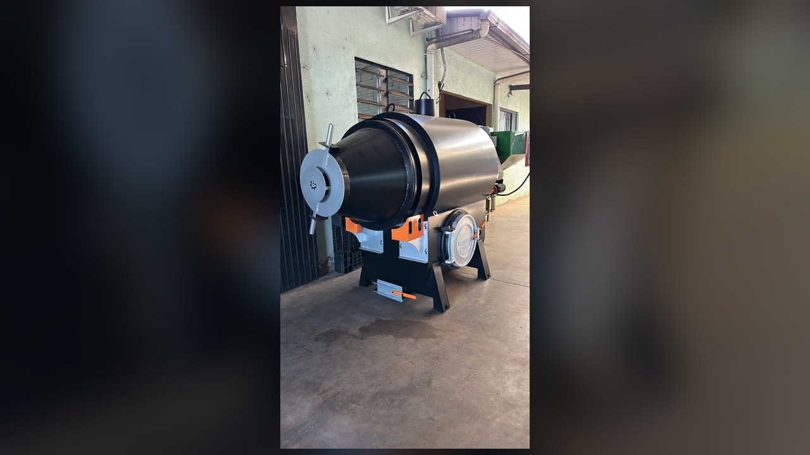
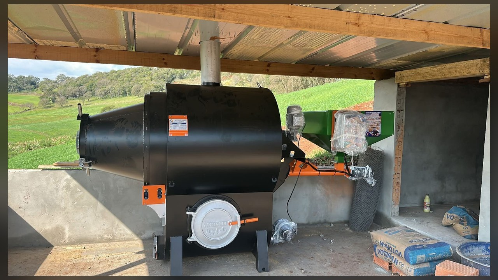

← Voltar ao catálogo de produtos


AQUECEDORES TONIOLLI · PRODUTOS
Desidratadores
Conheça os Desidratadores de Carcaças da Aquecedores Toniolli. Disponíveis em modelos com capacidade de 150 kg a 1.000 kg. Consulte nossa equipe para encontrar a solução adequada à sua necessidade.
Solicitar orçamento pelo WhatsApp → Ver ficha técnica ↓CONHEÇA OS DESIDRATADORES
Apresentação dos Desidratadores
Assista ao vídeo de apresentação dos equipamentos da Aquecedores Toniolli.
INFORMAÇÕES DO PRODUTO
Ficha técnica — Desidratadores
Modelos com capacidade de 150 kg a 1.000 kg. As demais informações técnicas serão adicionadas em breve.
Capacidade dos modelos150 kg a 1.000 kg
FALE COM A NOSSA EQUIPE
Solicite um orçamento dos Desidratadores
Envie uma mensagem para consultar preços, disponibilidade e detalhes dos equipamentos.